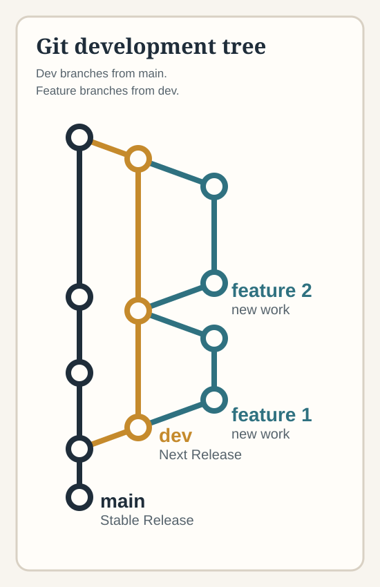

AI: A Shortcut to Software Design (8077)
Vern McGeorge
VernMcGeorge@gmail.com
408-256-1849
Until you're in my contacts list, leave a text or voicemail.
Follow along: https://vemcg.github.io/cace-8077/sessions/age-of-exploration/
Press F to toggle full screen
The two immediate "must haves" are:
I use Visual Studio Code and git. I strongly recommend git especially if you are going to allow the AI to help you with it.
Adding an AI Coding partner to your IDE is how you offload most of technical details to AI by allowing the AI to edit your files directly and to interact with other tools such as git.
All four of the AI options listed in the last session (and no doubt many more) offer such integration. The following slides written by each of these AIs list their features, costs, and links to get started.

Git is a version control system that records changes to files so you can experiment, review your history, and return to an earlier working state.
GitHub is an online service for storing Git repositories and collaborating with other people. It adds shared hosting, pull requests, issues, and project coordination around Git.
Text template: Add the key idea, example, or classroom explanation you want students to remember here.
As written by the various companies
Details are subject to change at any time
What it is: A VS Code extension (built on the Claude Code CLI) that lets Claude read, edit, and create files across your whole project — not just answer questions in a chat window.
IDE integration
Beyond the editor
Cost
Get started:
GitHub Copilot is an AI coding partner built into the tools many developers already use. It offers deep integration with VS Code, Visual Studio, GitHub, and Azure, providing inline code suggestions, repo-aware reasoning, pull request help, and command-line workflows.
Copilot can also work with third-party tools through extensions, APIs, GitHub Actions, and cloud deployment hooks. This makes it useful across the development workflow, from writing and understanding code to reviewing changes and deploying applications.
Cost: Copilot Pro is $20/month. GitHub Copilot Enterprise is $39/user/month.
Get started: Get started